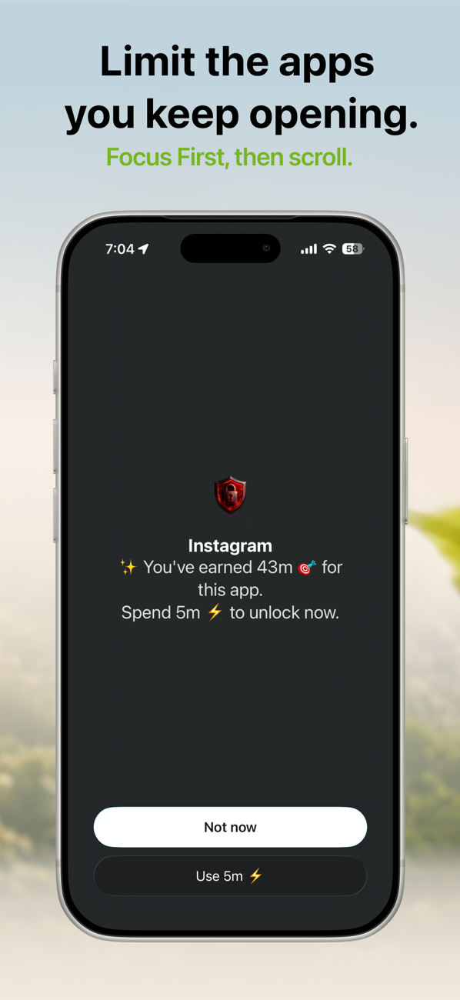

Quick answer: To block TikTok on iPhone without deleting it, either set an App Limit (Settings → Screen Time → App Limits → TikTok) or — if you keep tapping "Ignore Limit" — shield it with a Screen Time-based blocker like FocusFirst, where TikTok only opens by spending screen time you've earned through focused work.
Why TikTok specifically is so hard to limit
TikTok's feed is the purest version of the infinite-scroll slot machine: full-screen, autoplaying, algorithmically tuned to you within a session or two. "Average session length" isn't a stat TikTok fights to lower. That's why the one-tap escape hatches in Apple's built-in tools fail here more than anywhere else — the pull is stronger than the fence.
Option 1: Apple Screen Time limit on TikTok
- Go to Settings → Screen Time → App Limits → Add Limit.
- Expand Social, select TikTok, tap Next.
- Set your daily allowance (be honest — 30 minutes, not 5) and tap Add.
Good news: it's free and takes a minute. Bad news: when time's up, Ignore Limit is right there, and TikTok's "one more video" gravity makes that button very easy to find.
Option 2: Downtime for the danger hours
If TikTok mainly gets you late at night, schedule Downtime (Settings → Screen Time → Downtime) across your sleep window. Blunt but effective for the bedtime spiral — less useful for the twenty daytime micro-sessions.
Option 3: Block TikTok behind earned time
This is the method for people who've already worn out the Ignore button:
- Add TikTok to your blocked apps in FocusFirst's Focus Engine. It stays installed, notifications and all your data intact — it's just shielded.
- Choose your focus apps — the things you keep meaning to do instead: Anki, Kindle, Duolingo, your notes app, whatever moves your life forward.
- Earn your TikTok time. Focus time converts to scroll time at your chosen rate. When you tap TikTok, the shield shows the trade: "You've earned 43m. Spend 5m to unlock now?" — with Not now as the other button.
The difference is psychological, not just technical. Apple's limit asks you to resist TikTok. The earned-time shield asks you to price it — and a reflex can't answer a pricing question. Most reflexive opens end at "Not now," because the open was never a decision in the first place.
Keep it realistic
- Don't block to zero. Total bans break spectacularly — usually on a Sunday. Budget TikTok like money.
- Watch one number: your weekly earned-scroll-used vs. focused hours in the Progress tab. If TikTok time is flat but focus hours doubled, the system is working.
- Expect week one to feel weird. The phantom urge to check fades noticeably once your brain learns the shield isn't bluffing.

Try it: FocusFirst requires a subscription or one-time Lifetime purchase — block your distracting apps, set your earning rate, and start your first focus session today. Get FocusFirst for iPhone →